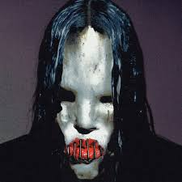
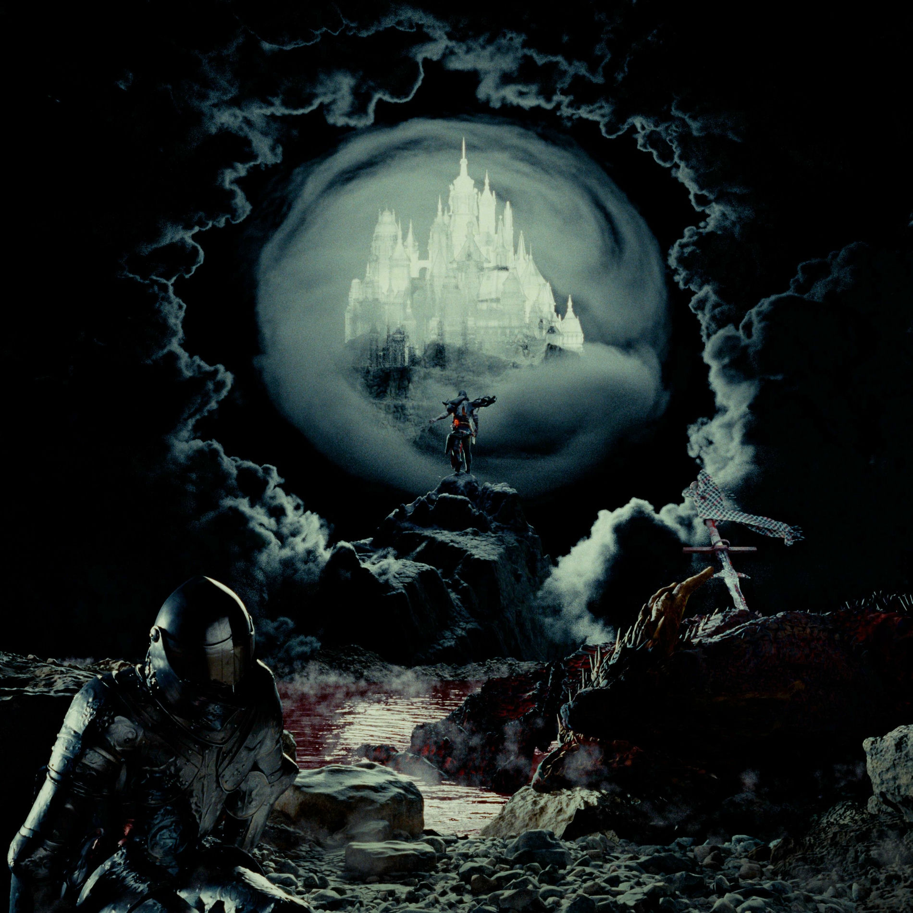
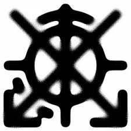
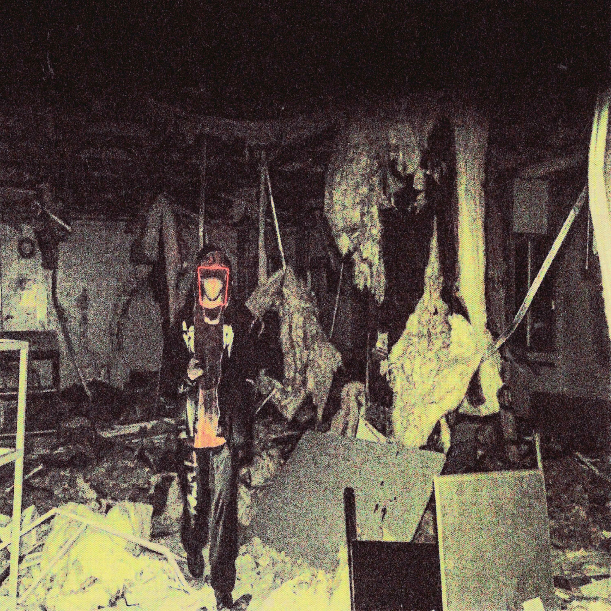

Voici un projet controversé, violent, sincere. Il pourrait être scindé en trois parties qui explique le parcours des deux chanteur.e.s, Ptite Soeur et FEMTOGO :
- PRETTY parle de la façade, du fait de devoir jouer un rôle, de se construire une fausse innocence pour plaire aux autres.
- DOLL évoque le fait d'être traité comme un objet, d'être manipulé et de ne plus avoir aucun contrôle, de devenir le jouet de quelqu'un d'autre.
- CRPSE symbolise la mort de cette innocence, l'état dans lequel on se trouve après le traumatisme et ce qui reste d'une enfance brisée.
Mis ensemble, l'album raconte une histoire glaçante, la séduction (“pretty”), puis l'abus et la déshumanisation (“doll”), et enfin le résultat, une forme de mort intérieure (“corpse”).

Tracklist
13 titres --- 33m52s --- 10/10/25
- WHITE CHAMBER TALK - 1:17
- 100 000 LUMEN - 2:26
- HANK J. - 2:41
- BACHA BAZI WHISTLEBLOWER - 2:26
- GEIGER COUNTER - 2:37
- EVIL KNIEVEL - 2:22
- SIXTH FLOOR - 2:28
- G.MCKENNA - 3:27
- PUKE SOMETHING - 3:13
- MIRRROIR - 2:05
- SEPTICEMIE - 2:49
- P***** D* C**** - 2:24
- LE MÔME - 3:32
Autres Albums


